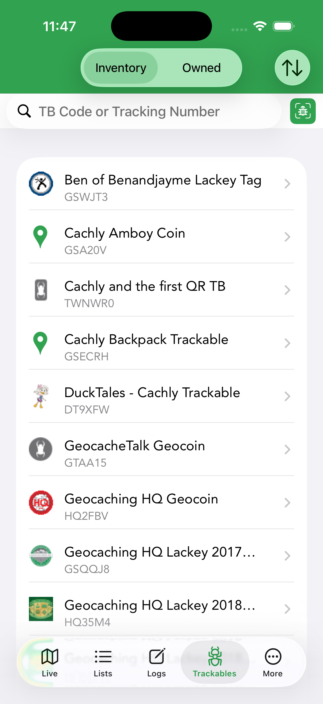
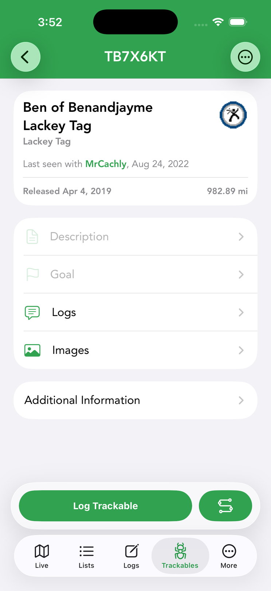

Trackables
Trackables are Travel Bugs and geocoins that move from cache to cache. The Trackables tab manages the ones in your inventory and the ones you own, and lets you log their movements.


Inventory & owned
The Trackables tab has two views, switched at the top:
- Inventory — trackables you’re currently carrying (you grabbed or retrieved them).
- Owned — trackables you released into the wild, so you can follow their journeys.
Sort by Date of Last Log or Trackable Name with the sort icon, and find a specific item by entering its TB code or tracking number — or by scanning its QR code. Tap any trackable for a detailed view where you can log activities or see a map of its movement history.
Trackable detail
Tapping a trackable opens its detail screen — name, type, who it was last seen with, release date and distance traveled — with sections for Description, Goal, Logs, Images and Additional Information. The top-right ⋯ menu offers View on geocaching.com.
Logging a trackable
From the detail screen, tap Log Trackable. The log screen has a Send Log Now toggle (on = upload to geocaching.com immediately; off = save to pending logs), a date, a Message, and a Log Type. The available actions depend on whether the trackable is in your inventory:
| Action | Meaning |
|---|---|
| Discover / Grab / Retrieve | For a trackable you don’t hold: note that you saw it, or take it into your inventory. |
| Dropped Off in Cache | Place a held trackable into a cache — it leaves your inventory. |
| Visited Cache | A held trackable traveled with you to a cache without being dropped. |
| Write Note | A comment without changing the trackable’s location. |
| Mark as Missing | Flag a trackable that’s no longer where it should be. |
Travel history
Each trackable has a travel list showing where it’s been. You can view a trackable’s journey on the map using the Trackable Travels view type to see the path it has taken.
TB Scanner
The built-in TB Scanner reads a trackable’s code so you can log it quickly without typing — handy at events where you’re discovering many trackables.
Auto-visit
With auto-visit (enabled in Settings › Trackables), the trackables you choose from your inventory are automatically marked as visiting the caches you log — so a Travel Bug riding along racks up mileage without per-cache logging. It applies to Found It, Attended and Webcam Photo Taken logs.